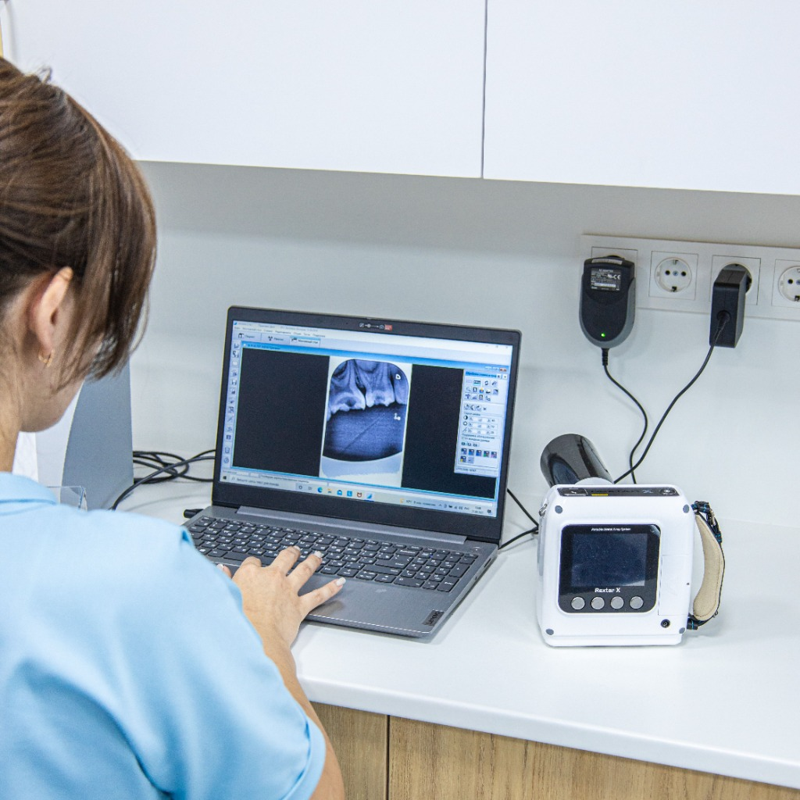
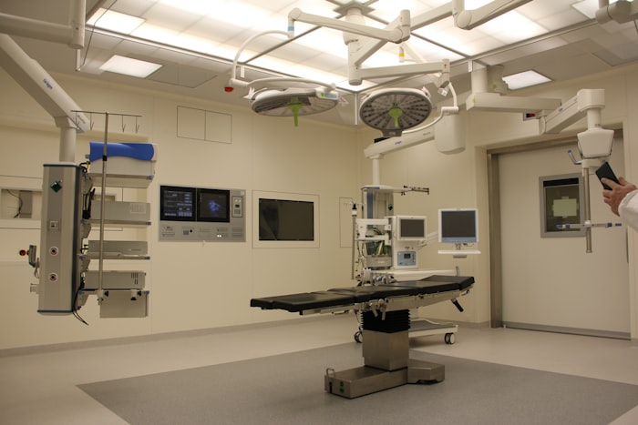
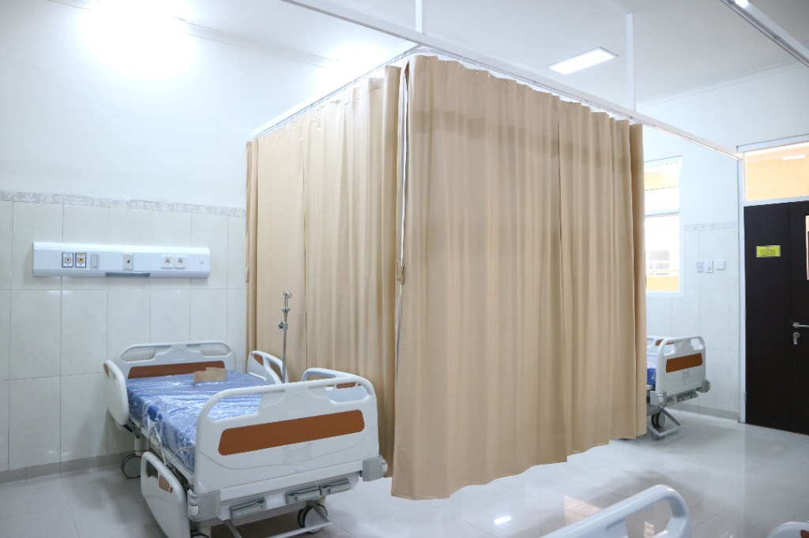

Comprehensive Clinical Specialties
Vitalis houses 24+ specialized departments equipped with pioneering diagnostic modalities, world-class subspecialists, and patient-first care pathways.
Cardiology
Coronary angioplasty, electrophysiology, echocardiography, and transcatheter valve replacement.
Book DepartmentNeurology & Spine
Microscopic brain tumor surgery, Parkinson's deep brain stimulation, and acute stroke thrombolysis.
Book DepartmentOrthopedic Surgery
Robotic total knee and hip arthroplasty, sports medicine arthroscopy, and complex trauma fixation.
Book DepartmentPediatrics & NICU
Level IV Neonatal Intensive Care, pediatric cardiology, immunization, and childhood developmental medicine.
Book DepartmentComprehensive Oncology
Targeted immunotherapy, precision molecular sequencing, surgical oncology, and radiation therapy.
Book DepartmentGeneral Medicine
Preventive executive health checkups, chronic lifestyle disease management, and internal diagnostic evaluations.
Book DepartmentDermatology & Mohs
Mohs micrographic skin cancer surgery, clinical phototherapy, laser therapies, and complex psoriasis treatments.
Book DepartmentGastroenterology
Advanced therapeutic endoscopy, ERCP, liver transplant evaluations, and inflammatory bowel disease care.
Book DepartmentPulmonology & Sleep
Bronchoscopy, pulmonary fibrosis management, asthma therapeutics, and dedicated sleep diagnostic laboratories.
Book DepartmentGynecology & Obstetrics
High-risk pregnancy monitoring, minimally invasive laparoscopic hysterectomy, and comprehensive fertility care.
Book DepartmentENT & Head / Neck
Endoscopic sinus surgery, cochlear implants, voice restoration, and head & neck oncology resection.
Book DepartmentUrology & Kidney
Laser lithotripsy for kidney stones, robotic prostatectomy, and advanced reconstructive urology.
Book DepartmentEmergency & Trauma
24/7 Level 1 Trauma resuscitation, dedicated cardiac arrest suites, and rapid mobile ICU dispatch.
24/7 Emergency LineRadiology & Imaging
3T Ultra-High Field MRI, 512-slice Spectral CT, digital mammography, and interventional fluoroscopy.
Book DepartmentOphthalmology & Vision
Cataract micro-surgery, LASIK vision correction, glaucoma management, and specialized corneal transplants.
Book DepartmentRehab & Physiotherapy
Neurological post-stroke recovery, customized orthopedic rehabilitation, and cardiac strengthening regimens.
Book DepartmentNext-Generation Medical Technology
We invest continuously in cutting-edge surgical robotics and intelligent diagnostic instrumentation to maximize precision and accelerate recovery.

da Vinci® Robotic Surgical Suites
Provides sub-millimeter precision for cardiac, urologic, and oncologic procedures, reducing hospital stay by up to 60%.

3T High-Field MRI & Spectral CT
Ultra-clear neuro-vascular imaging with reduced scan times and AI-assisted anomaly detection algorithms.

Continuous Telemetric Hybrid ICUs
Real-time vital telemetry with negative-pressure isolation pods and direct bedside specialist oversight.